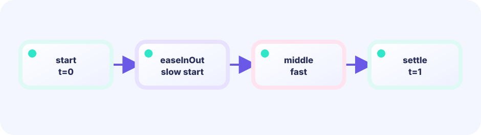

Expand
Multiply age by speed for radius.
radius := age*speed
★★★☆☆ / PLAYABLE
Expand circles from a tapped point and flash short radial lines. With no image assets, the center already reads like a special-move impact.
This lab also sits on the LEVEL 01 loop of Update (numbers) → Draw (pixels). Here we dig one layer deeper into how Draw paints.

PLAYABLE / LIVE GO + MOUSE
Replay the ring and change the number of focus lines.
DEEP DIVE / OPTICAL TRICK / IMPACT
Grow ring radius with age and fade it out. Leave a gap near the center of each focus line so the eye is pulled toward the collision. A short lifetime feels sharp.
Multiply age by speed for radius.
radius := age*speed
Draw many angles from one center.
angle := i*2π/n
Lose alpha toward end of life.
alpha := 1-age/life
TRY IT / IMPACT
Replay the ring and change the number of focus lines.
IN THE WASM
Circles and lines using one coordinate merge into one strong hit.
radius := age * speed
vector.StrokeCircle(screen, x, y, radius, width, color, true)
for i := 0; i < rays; i++ {
angle := float64(i) * 2 * math.Pi / float64(rays)
drawFocusLine(screen, x, y, angle, alpha)
}WHY A RING
Growing radius reads as transmitted impact.
WHY LINES
Radial lines point at the important spot.
TRY NEXT
Pair it with hit stop for extra weight.
FEEDBACK